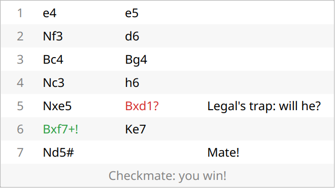
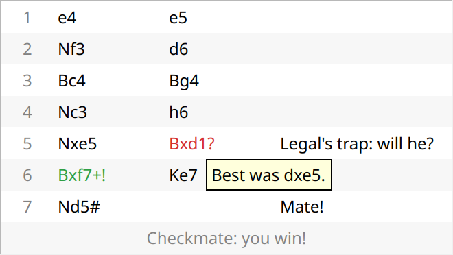
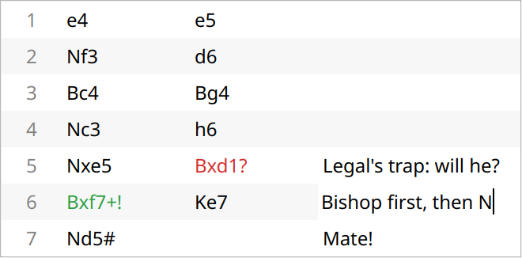

The move list shows the game in rows: the move number, White's move, Black's move, and a column for your own notes. Click a move to see the position after it; the game goes on meanwhile, and End or Esc brings you back. When the game is over, the last row says how it ended.
The marks.
During the game, the marks follow the coaching: yours show with Comments after moves (Play, Guided, Full coaching), the opponent's also need Guidance (Guided, Full coaching), and Tournament shows none while you play. Once the game is over, every mark shows, at every level.

Legal's mate, with you as White. 5... Bxd1? is Buster's mistake (it allows mate); 6. Bxf7+! was the only move that wasn't a mistake. Your notes are on the right, and the last row says how the game ended.
The coach's comments. Hover over a move to read what the coach said about it: "Best was Nf3.", "Buster missed 12... Bxf3. You got away with it." They follow the same rule as the marks.

The mouse on 5... Bxd1?: the move the coach would have played.
Your notes. Double-click the Notes cell of a row and type a note on your move in that row: up to 30 characters. Enter keeps it, Esc throws it away. Your notes are saved with the game and come back when you open it again.

Typing a note on 6. Bxf7+ during the game.